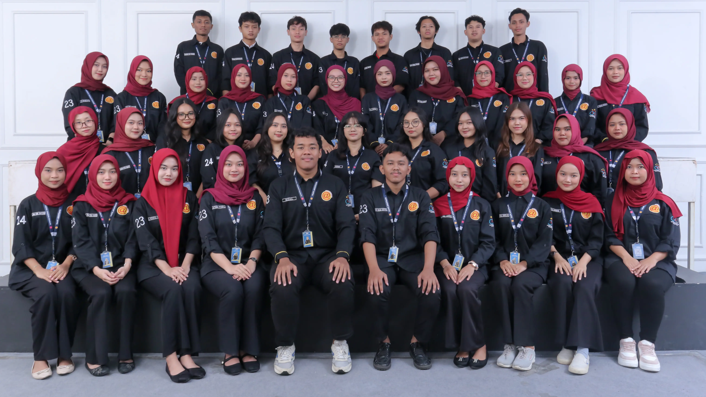

Tentang Kami
HMPS Akuntansi 2026/2027
HMPS Akuntansi merupakan organisasi mahasiswa yang mewadahi pengembangan akademik dan nonakademik mahasiswa akuntansi. Mengusung konsep AKSARA (Aksi Nyata, Sederhana, Rasional, dan Akuntabel), HMPS Akuntansi berkomitmen menghadirkan program kerja yang efektif, berbasis logika, serta dapat dipertanggungjawabkan. Melalui nilai AKSARA, HMPS Akuntansi berupaya menjadi organisasi yang profesional, adaptif, dan berdampak nyata bagi mahasiswa.
Visi
Menjadikan HMPS Akuntansi sebagai organisasi yang solid, profesional, dan berdampak nyata bagi pengembangan akademik, kepemimpinan, serta reputasi mahasiswa Akuntansi
Misi
- Mengembangkan program kerja yang efektif, efisien, dan memiliki nilai strategis
- Membangun jejaring dan citra positif HMPS Akuntansi melalui kolaborasi internal dan eksternal
- Menguatkan peran HMPS sebagai penunjang akademik mahasiswa Akuntansi
Program Kerja Utama
- Accounting Competition Plus (ACP)
- Bakti Masyarakat
- Seminar/Webinar Nasional Akuntansi
Struktur Organisasi
HMPS Akuntansi dipimpin oleh seorang direktur yang dibantu oleh tiga wakil. Tiga wakil tersebut masing - masing membawahi dua divisi. HMPS Akuntansi total memiliki 49 anggota,
